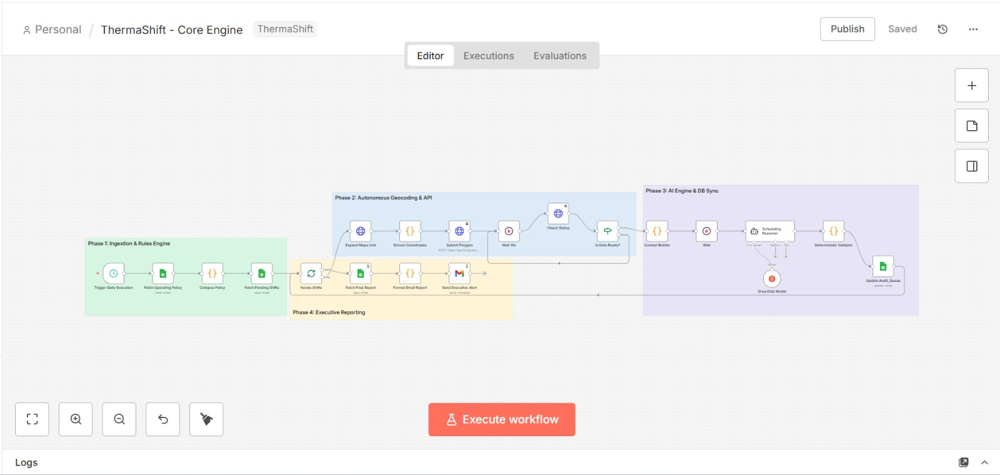

Demo Console
Run an audit, then verify the updated statuses and proposed windows in the Google Sheet + your inbox.
Run & Verify
Open the sheet, run an audit, and watch the queue update.
Receive Dispatch Alert
Enter your email to receive the executive dispatch summary after the audit runs.
What you should see (60–90s)
- Audit queue rows update with SAFE / RESCHEDULED / ESCALATED outcomes
- Proposed windows appear for RESCHEDULED items
- You receive an executive summary email at the address provided
n8n Workflow
Pipeline overview (screenshot)
Keep this visible during judging.

Ensure the workflow screenshot is up-to-date with your final run path and error trigger path.